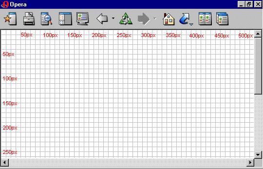

Lição 14: Posicionando elementos
Com posicionamento CSS podemos colocar um elemento em uma posição exata na página. Combinado com floats (ver lição 13), o posicionamento abre muitas possibilidades para criação de layouts precisos e avançados.
Nesta lição veremos os seguintes itens:
O princípio de posicionamento CSS
Considere a janela do navegador como um sistema de coordenadas:

O princípio de posicionamento CSS estabelece que você pode posicionar um elemento em qualquer lugar na tela usando um sistema de coordenadas.
Vamos supor que queremos posicionar um cabeçalho. Usando o box model (ver lição 9) o cabeçalho pode ser estilizado para ser apresentado como mostrado abaixo:

Se quisermos o cabeçalho posicionado a 100px do topo do documento e a 200px à esquerda, podemos usar o seguinte CSS:
h1 {
position:absolute;
top: 100px;
left: 200px;
}

Como você pode ver, posicionar com CSS é uma técnica precisa para colocar elementos. É muito mais fácil do que usar tabelas, imagens transparentes e tudo mais.
Posicionamento absoluto
Um elemento posicionado absolutamente não cria nenhum espaço no documento. Isto significa que não deixa nenhum espaço vazio após ser posicionado.
Para posicionar um elemento de forma absoluta a propriedade position deve ser definida para absolute. Você pode então usar as propriedades left, right, top, e bottom para definir as coordenadas e posicionar o elemento.
Para exemplificar o posicionamento absoluto escolhemos colocar quatro boxes nos quatro cantos da página:
#box1 {
position:absolute;
top: 50px;
left: 50px;
}
#box2 {
position:absolute;
top: 50px;
right: 50px;
}
#box3 {
position:absolute;
bottom: 50px;
right: 50px;
}
#box4 {
position:absolute;
bottom: 50px;
left: 50px;
}
Posicionamento relativo
Para posicionar um elemento de forma relativa a propriedade position deve ser definida para relative. A diferença entre os dois tipos de posicionamento é a maneira como o posicionamento é calculado.
O posicionamento para posição relativa é calculado com base na posição original do elemento no documento. Isto significa uma movimentação do elemento para a esquerda, para a direita, para cima ou para baixo. Assim fazendo o elemento ocupa um espaço após ser posicionado.
Como exemplo de posicionamento relativo vamos tentar posicionar três imagens relativamente as suas posições originais na página. Notar como as imagens deixam um espaço vazio nas suas posições originais no documento:
#dog1 {
position:relative;
left: 350px;
bottom: 150px;
}
#dog2 {
position:relative;
left: 150px;
bottom: 500px;
}
#dog3 {
position:relative;
left: 50px;
bottom: 700px;
}
Sumário
Nas duas lições anteriores você aprendeu como flutuar e posicionar elementos. Estes dois métodos posibilitam a você construir o layouy sem uso das ultrapassadas tabelas e imagens transparentes no HTML. Use CSS. É mais preciso, mais vantajoso e muito mais fácil de manutenir.